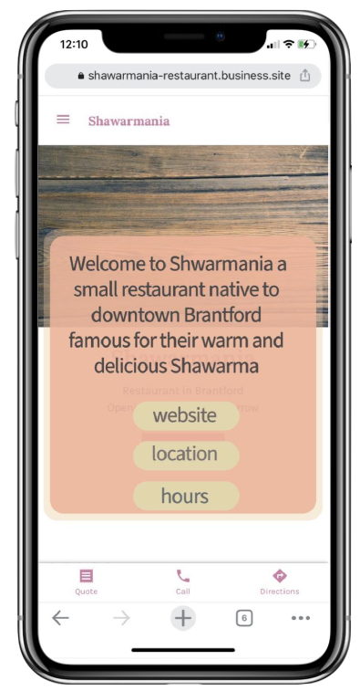
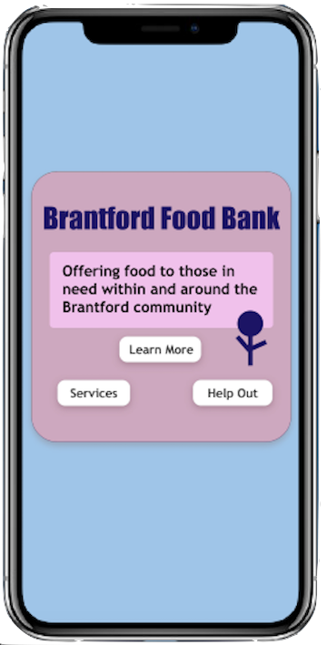

The goal of this group project was to add on to speculative design one. We were to keep our previous design within the boundaries of the assignment and BIA's objective. Our problem, users, and question remained the same. However, this time we were to add another electronic component to our design as well as connect it to the Internet of Things (IoT).
Tinkercad.
Adobe Illustrator.
Adobe InDesign.
Businesses are have difficulty connecting with the local communit of downtown Brantford.
Brantford citizens: How can I find the right business for my needs?
Brantford businesses: How can we reach our community more effectively?
How might we utilize accessible and multisensorial technology to engage the Brantford community with local businesses?
Each downtown Brantford business would have a 3D QR code mounted to their wall (outside, inside, or both). When scanned, it would lead the user to the businesses' website or whatever platform the business chooses to send the user.
The high-budget version: a digital screen on a 3D model displaying the QR code, along with a motion detection sensor.
The low-budget version: a vinyl sticker on a 3D model displaying the QR code.
If the business has an issue with the cost of the high-budget version, they can choose the alternative which is just as effective, but without the extra digital perks.
In addition, coupon QR code stickers would be subtly hidden around the city of Brantford, offering coupons for certain businesses, encouraging this connection between citizens and local businesses.
Our group worked together over the course of one month to create accurate visuals of our vision for this project.
Below is the 3D QR code prototype which would be mounted on the business wall (outside, inside, or both). This is our high-budget option. We made improvements from SDP1, implementing additional details and thinking about production.
The 3D piece is stuck to a back panel which has four holes to allow it to be screwed and mounted on a wall. We have added a glass panel which protects the digital screen against damage or vandalism.
The motion sensor above the digital QR code screen detects movement which will turn the screen on and create a *ding* sound to attract customers or passerbys. The sensor pokes out of the glass to allow for effective detection.
You can see the prototype without the glass layer in the first photo and the prototype with the glass layer in the second photo.
Below is the 3D QR code prototype which would be mounted to the business wall (outside, inside, or both). This is our low-budget option. This option does not include the motion sensor or the digital screen, but it instead includes a simple vinyl sticker which is stuck on to the 3D box. Vinyl stickers are known to be resistant against any weather conditions such as rain and snow, and most vandalism will be easily cleaned. The first prototype displays the QR code without the glass layer, and to the second prototype displays the QR code with the glass layer.
Here you can view the instruction manual that would come with both the high-budget option and the low-budget option. Each package would include the same pieces, including the glass protection layer. The main difference is the 3D piece; the high-budget option would include the 3D piece with a sensor and digital screen, while the low-budget option would include the 3D piece with the vinyl sticker.
Below you can see that the coupon QR code stickers hidden around the city will remain the same as from SDP1. These will be vinyl stickers. We have added another example of a QR code stick which would not be a coupon, but a code in category of volunteering or charity. This example would be linked to the Brantford Foodbank. The user who scans the code would br brought to a menu where they could choose to volunteer by clicking "Help Out" or click "Services" if they need help. Scroll down to see how that pop-up would look like.
Below are examples of pop-ups and pages that the coupon QR codes above could lead the user. There are numerous options for landing pages after the code is scanned; this is one of the main reasons why QR codes are so beneficial.
 ✔️ Sight is engaged by...
If we were to move on to the testing phase, we would test this speculative design by:
Click here to view our slideshow presentation for this speculative design.
Our design will bring more people to downtown Brantford businesses and create a memorable experience for the community, as well as bring more technology to local businesses.
{kind=link}